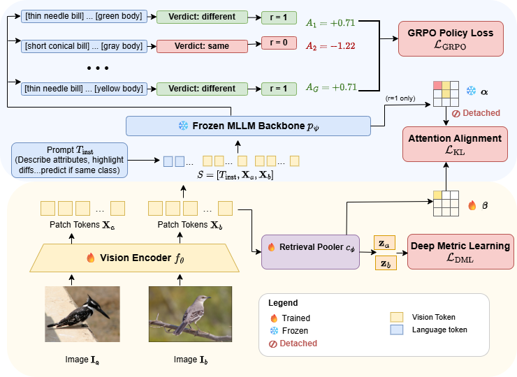
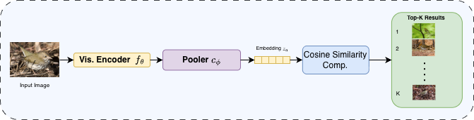

Qualitative results


Turning a frozen multimodal LLM into a training-time supervisor that teaches a vision encoder the fine-grained attributes that matter for zero-shot retrieval.
1 University of Illinois at Urbana-Champaign · * Equal contribution
Vision encoders for retrieval are typically trained with class-label supervision: each training pair reduces to a scalar that uniformly pushes the embedding apart or pulls it together, as if every visual attribute either differed or matched. A multimodal large language model (MLLM), shown the same pair, can articulate those attributes and use them to predict whether the images share a class. We propose SAGA, a framework that turns this language-grounded, attribute-aware perception into a training signal for the encoder itself. Specifically, we use Group Relative Policy Optimization (GRPO) to reward the MLLM for correct predictions on the vision encoder's tokens. Since correct predictions require those tokens to expose the specific attributes that differ or match between the pair, the gradient pushes the encoder to encode them, replacing the uniform pair-level scalar with attribute-resolved supervision. An auxiliary attention-distillation loss anchors the encoder's embedding to tokens the MLLM attended to, and a standard metric-learning loss shapes the embedding geometry for nearest-neighbour retrieval. The MLLM is frozen throughout and discarded at inference, matching the deployment cost of a metric-learning baseline. SAGA improves Recall@1 by 3 to 6 points over state-of-the-art baselines on CUB-200-2011, Cars-196, FGVC-Aircraft, and iNaturalist Aves on zero-shot image retrieval.
SAGA replaces the single scalar of class-label metric learning with attribute-resolved supervision distilled from a frozen MLLM, training a vision encoder whose embeddings capture the fine-grained attributes that matter for zero-shot retrieval. The MLLM is discarded at inference, so deployment costs nothing extra.
The vision encoder emits patch tokens that a frozen MLLM compares pairwise, describing attributes and judging same/different class. Three signals shape the encoder and pooler:
Correct same/different verdicts are rewarded via GRPO. The policy gradient flows back through the frozen backbone, pushing the encoder to expose the discriminative attributes the MLLM relied on.
An attention-alignment loss distills the MLLM's spatial attention into a lightweight pooler, so it weights attribute-relevant regions rather than spurious cues.
A standard deep-metric-learning loss shapes the pooled embedding geometry for nearest-neighbour retrieval.


Zero-shot image retrieval on four fine-grained benchmarks. All methods share the same Qwen3-VL-8B vision tower; baselines use mean pooling. SAGA improves Recall@1 by 3–6 points over the strongest prior baselines.
| Method | CUB-200 | Cars-196 | Aircraft | iNat-Aves | ||||||||
|---|---|---|---|---|---|---|---|---|---|---|---|---|
| R@1 | R@4 | NMI | R@1 | R@4 | NMI | R@1 | R@4 | NMI | R@1 | R@4 | NMI | |
| Pre-trained backbone | 75.6 | 91.8 | 0.77 | 70.7 | 88.5 | 0.49 | 53.1 | 76.1 | 0.43 | 42.2 | 64.8 | 0.65 |
| Proxy Anchor | 79.5 | 92.0 | 0.79 | 93.4 | 97.3 | 0.84 | 73.1 | 92.8 | 0.68 | 54.1 | 73.1 | 0.72 |
| Potential Field | 81.6 | 92.9 | 0.81 | 93.7 | 97.8 | 0.86 | 77.4 | 93.2 | 0.72 | 55.6 | 75.0 | 0.73 |
| SAGA (ours) | 87.9 | 96.3 | 0.83 | 97.0 | 98.6 | 0.89 | 83.5 | 93.9 | 0.77 | 60.1 | 77.1 | 0.80 |
Recall@1, Recall@4 (%) and Normalized Mutual Information (NMI, ∈ [0,1]). iNat-Aves is our bird subset of iNaturalist-2021. SAGA values are means over 3 seeds. Best per column in the highlighted row.
If you find our work useful, please consider citing:
@article{bhatnagar2026saga,
title = {Beyond Scalar Distances: Semantic Attribute Gradients
from Frozen MLLMs for Visual Embeddings},
author = {Bhatnagar, Shubhang and Baiju, Dheeraj and Ahuja, Narendra},
journal = {arXiv preprint arXiv:2606.15134},
year = {2026}
}